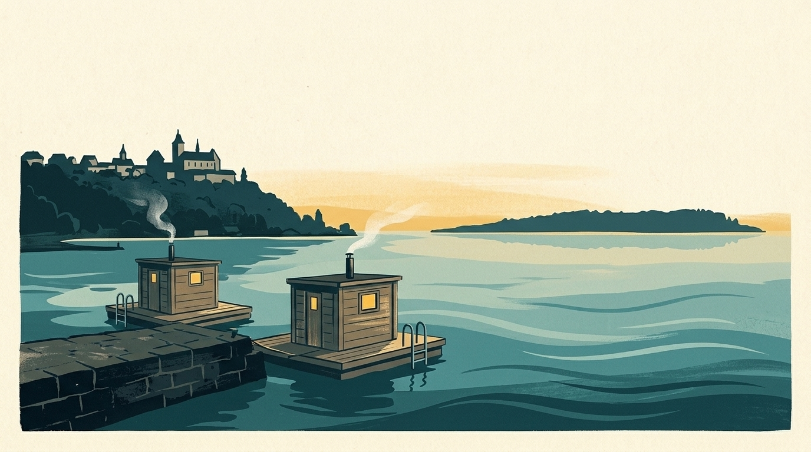

En bref
Mon Lac recense 6 saunas flottants sur quatre lacs suisses : le Léman, le lac de Bienne, le lac de Zurich et le lac des Quatre-Cantons. Ce sont des bateaux ou des radeaux équipés d’un sauna, loués par créneau pour un petit groupe, d’où l’on plonge directement dans le lac.

Qu’est-ce qu’un sauna flottant ?
Un sauna installé sur un bateau ou un radeau. Selon l’exploitant, on navigue soi-même ou l’embarcation reste amarrée ; les fiches ci-dessous le précisent quand l’exploitant le dit, ainsi que le nombre de personnes et les conditions de location.
Les adresses, lac par lac
Léman
- Sauna Boats Genève, Genève, près de Plage des Eaux-Vives : Le premier sauna flottant du Léman : jusqu’à six personnes, sans permis dans la rade, départ Quai Gustave-Ador 33.
Lac de Bienne
- Saunafloss Erlach, Cerlier (Erlach), près de Cerlier (Erlach) : Radeaux-saunas chauffés au bois amarrés au débarcadère de Cerlier, sur le lac de Bienne : on plonge directement dans le lac. Sur réservation.
- Saunaboot Biel, Bienne (Vingelz), près de Bienne – Plage : Bateau-sauna sur le lac de Bienne, exploité par Joran-Biel (Neuenburgstrasse 72, arrêt de bus Räblus Vingelz).
Lac de Zurich
- Saunabooten Hildi & Alice (Bootsvermietung Enge), Zurich, près de Zurich – Strandbad Mythenquai : Deux bateaux-saunas au Mythenquai, loués par créneaux fixes de 4 heures pour 2 à 6 personnes, sans permis (vitesse limitée à 10 km/h), sur réservation en ligne. Prix variables selon la source : voir le site.
- Saunaboot Leopoldd, Jona (Rapperswil-Jona), près de Rapperswil : Bateau-sauna parti de la marina KIBAG à Jona, jusqu’à six personnes, créneaux de 3, 4, 6 ou 9 heures dès 399 francs, sans permis, dès 18 ans.
Lac des Quatre-Cantons
- Saunaboot s’Berti, Lucerne (Kastanienbaum), près de Lucerne – Lido : Bateau-sauna sur le lac des Quatre-Cantons, amarré dans le port au pied du Seehotel Kastanienbaum.
Fiches vérifiées le 11 novembre 2026. Les horaires, les prix et les saisons changent : le lien de chaque sauna mène à son site, à consulter avant de partir.
Et le plongeon dans le lac ?
La Société Suisse de Sauvetage donne une règle simple pour l’eau froide : ne pas rester plus de minutes dans l’eau qu’elle n’a de degrés. L’eau du moment est indiquée plus bas. À lire avant : les 90 premières secondes dans l’eau froide et comment se réchauffer après.
Voir aussi : les saunas au bord du Léman et ceux du lac de Zurich.
L’eau de ces lacs en ce moment
La température de chaque plage est dans l’app Mon Lac, mise à jour toutes les trois heures.